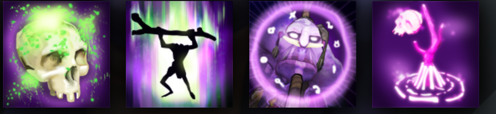

WITCH DOCTOR
CHANNELS A HIGH DAMAGE DEATH WARD
HISTORY
A wiry silhouette hitches forward--uneven of feature and limb, bizarre of gait, relentlessly criss-crossing the battlefield in search of that vital weak point where his talents can do most good, and most harm. Whether broken or mismade it is not clear, but still, none can doubt the power carried in his twisted physique. A long staff thumps the earth as Zharvakko the Witch Doctor advances, deploying a terrifying arsenal of fetishes, hexes and spells. It is a body of magical knowledge learned and perfected over several lifetimes in the island highlands of Arktura, now wielded with precision accuracy against his enemies. Zharvakko can be your best friend or your worst enemy--healing allies and laying waste to all who oppose him.
ABILITIES
PAIRD WELL WITH
AXE
PUDGE
ENIGMA